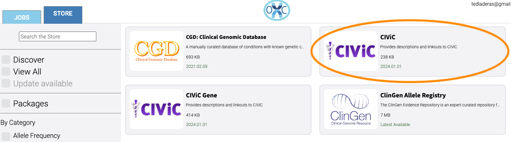
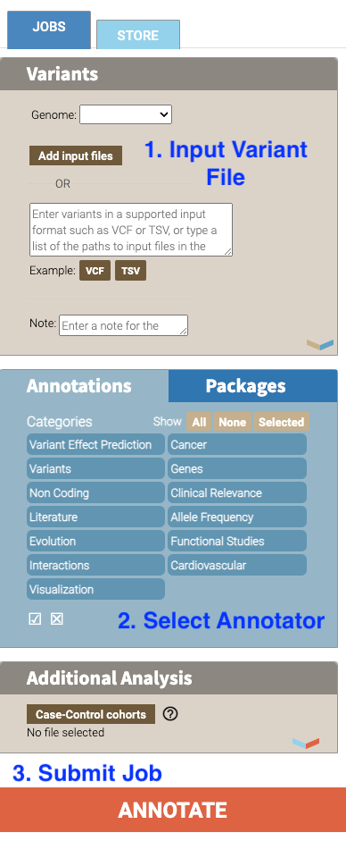
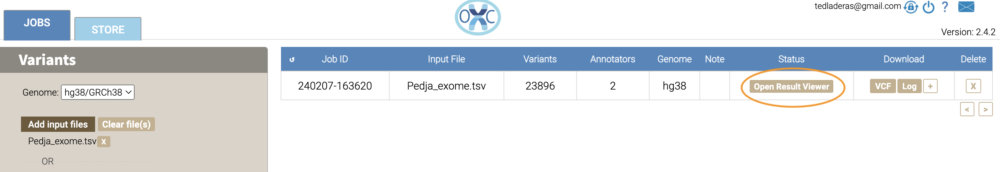
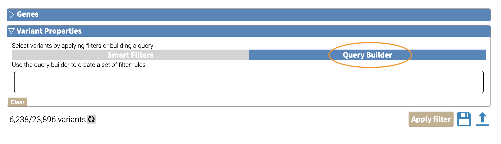

flowchart TD
L[Creating an Open-Cravat Account] --> A
click L "#creating-an-open-cravat-account"
A[Browse and select annotators] --> B[Convert to Input File Format]
click A "#browse-annotators"
click B "#convert-to-input-file-format"
B -->|Variant File Input| C[Submit Annotation Job]
click C "#submit-annotation-job"
C -->|Results|D["Filter Results"] --> E[Visualize Results]
click D "#filter-results"
click E "#visualize-results"
Getting Started (Website)
Understanding the Context for our Task
Let’s start with a research question we’re interested in. We have a list of exome variants that we’ve found in our patient population of interest. Our research question is:
Given this list of variants, which are potentially pathogenic?
This research question will take us through understanding how the Open-Cravat annotator works.
Learning Objectives
- Create as user account on the open cravat site
- Search for available annotators on the open cravat site
- Upload and annotate variant files on the site
- Filter annotated results for visualization
- Visualize and Summarize Results in Open-Cravat
- Export and Share annotation results with others
Creating an Open Cravat Account
Let’s start out by creating an account on https://run.opencravat.org. If your organization is running Open-Cravat locally, you will need to find out the appropriate URL for the instance of Open-Cravat.
Here’s the iniial screen we’ll see when we go to https://run.opencravat.org. You’ll click on the “Sign Up” Button to create an account.
 Enter your details in the form, and sign up. You’ll automatically be signed into the interface and will be ready to go for the next step.
Enter your details in the form, and sign up. You’ll automatically be signed into the interface and will be ready to go for the next step.

Browse Annotators
If we click on the STORE tab in the top left of the interface, we’ll see the variety of annotators that are available to us.

Let’s browse the clinically relevant annotators by clicking on the “Clinically Relevant” checkbox:

As we browse the annotators available to us, we notice two specific annotators we want to work with. Let’s use two clinically relevant annotators: CiViC (Clinical Interpretations of Variants in Cancer) and ClinVar, a public archive of interpretations of clinically relevant patients.
To get more information, click on the box with the CiViC:
 And you’ll see more information about the annotator:
Now we know which annotators we want to use, so let’s annotate a file.
Convert to Input File Format
Open-Cravat supports VCF files for input, but also has a simplified format to be used for input files.
We’ll use an exome example and annotate it. Let’s take a look at the first few lines of this file to understand the input format.
chr1 946247 G A
chr1 952421 A G
chr1 953259 T C
chr1 953279 T C
chr1 961945 G C
chr1 965125 G C
chr1 965338 TTAT -
chr1 965667 CC -
chr1 973858 G CThis format contains the following columns: chromosome, position, reference, and allele.
Much more information about the supported file formats are here: File Formats.
Submit Annotation Job
Before we move on, let’s take a look at the overall workflow for annotating in the GUI. We’ll start out by 1) submitting our input file, 2) selecting the annotators, and then 3) submitting our job.

Let’s start the workflow. We can now add our variant file to annotate and submit a job. Select the JOBS tab in the top left corner of the interface.

Our exome file corresponds to the hg19/GRCH37 build, so make sure that this genome is selected under the Genome field

Now we’ll add our input file. Add your Pedja_exome.tsv file here by clicking the “ADD INPUT FILES” button:

Now we can select our annotators. Under annotations in the box below “Variants”, click on the “Clinical Relevance” category.

Select the CiViC (not CiViC Gene) and ClinVar annotation checkboxes.

Now we’re ready to annotate. Click the ANNOTATE button at the bottom of the webpage. Now you’ve submitted your job.

Depending on the size of your Variant file, it may take time for your job to finish. You’ll see the job running in the table on the right of the interface.
Filter Results
We are interested in those variants that are associated with Breast Cancer in ClinVar. How do we find those?
Now we take a look at our results in the web interface. Under the list of jobs, we can see our job. Let’s select Open Result Viewer under the Status tab:
 Keep in mind that the web interface is limited to visualizing 100,000 variants, so if you have a larger result file, you’ll need to filter the results down. So let’s take a look at how to filter our variants down.
We can filter variants by selecting the Filter tab in the Results viewer:

Under “Variant Properties” we can limit our list of variants to those that have ClinVar annotations. Let’s build a filter using the Query Builder, which will allow us to impose multiple criteria as a filter.

We’ll add a rule (a logical condition) to our filter using the + button:

Now we’ll add a rule and select those that have ClinVar annotations. To do this, we’ll first select ClinVar on the left, the Clinical Significance column, and has data:
 Now we can apply this rule we’ve built by clicking on the
Now we can apply this rule we’ve built by clicking on the Apply Filter button on the bottom right of the Query Builder:
 How many variants are left after the filtering?
How many variants are left after the filtering?
Visualize Results
Now that we’ve filtered, let’s go back to the Visualize Tab:
 In the Visualize tab, we can see information about the annotated variants, such as from the sequence ontology. We can get the counts within a sequence ontology category by mousing over that category in our plot:
In the Visualize tab, we can see information about the annotated variants, such as from the sequence ontology. We can get the counts within a sequence ontology category by mousing over that category in our plot:
 Using the save icon, you can also save these visualizations.
Using the save icon, you can also save these visualizations.
Let’s move over to the Variant tab and look for pathogenic variants. First, we’ll click over to the Variant tab:
 Scrolling to the right, we can see there is a column for the ClinVar annotations. Notice the + on the top right. We’ll click that to expand the ClinVar annotations:
Scrolling to the right, we can see there is a column for the ClinVar annotations. Notice the + on the top right. We’ll click that to expand the ClinVar annotations:
 In the Clinical Significance column, we can see that we can filter. Let’s select those variants that have pathogenic significance. Clicking into the search box underneath this column, we can select pathogenic:
In the Clinical Significance column, we can see that we can filter. Let’s select those variants that have pathogenic significance. Clicking into the search box underneath this column, we can select pathogenic:

How many variants are pathogenic?
What you learned
You learned a lot in this section. You learned how to:
- Create a User Account
- Browse Open-Cravat’s store to look for annotators
- Submit a job to the Open-Cravat server
- Filter results in the Results Viewer
- Visualize results in the Results Viewer